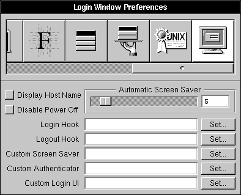

Release 3.3 Copyright ©1994 by NeXT Computer, Inc. All Rights Reserved.
| 9 | System Startup and Shutdown | |
| Ordinarily, you won't be aware of the complex system startup and shutdown processes, because they happen behind the scenes. Once you enter a startup or shutdown command (usually just by turning the computer on or off), the system functions automatically, and you see only the animated icons and the standard prompts. Nonetheless, it's useful to understand these underlying processes so you can identify and correct problems. | ||
| This chapter describes what happens when you start up and shut down a NEXTSTEP computer. It also discusses the system monitor programs, which you can use to get information about the system, to start up and shut down the computer, and to set system parameters. | ||
| While there are differences in the implementations of NEXTSTEP for Intel and NeXT computers, the startup process on all NEXTSTEP computers goes through four phases: |
| Bootstrap--The computer loads the Mach kernel into memory, either from a local disk or from the network. If you're starting up a NeXT computer from the network, the ROM first broadcasts a request to the network to locate a server, and the first server to respond provides the kernel. This phase is described in "Starting Up an Intel-based Computer" and "Starting Up a NeXT Computer" in this chapter. | ||
| Startup--Internal initialization of the Mach kernel takes place. The system hardware is reset, the kernel data structures are initialized, device drivers are started, the kernel threads are started, and the root file system is mounted. Finally, the kernel executes init. | ||
| init--The init program brings up the system in multi-user mode by running initialization (or rc) scripts, which start the various system processes and server processes (sometimes referred to as "daemon" processes, an archaic term that has little meaning) and mount the file systems. This phase is described in "Running init and the rc Scripts" in this chapter. | ||
| Login--Once the operating system has started up, the loginwindow program is run. The login window is the front end for the console of the NEXTSTEP environment. This phase is described in "Customizing Login and Logout" in this chapter. |
| Shutting down NEXTSTEP is also similar on both NeXT and Intel-based computers. This process is described in "Shutting Down the System."
Finally, there are a number of diagnostic tools for when you have trouble starting up or shutting down your computer. These are described in "Troubleshooting" at the end of this chapter. For more information about configuring device drivers for Intel-based computers, see Installing and Configuring NEXTSTEP. |
| Starting Up an Intel-based Computer |
| When you turn on a typical Intel-based computer, its ROM (usually referred to as the "BIOS") performs system diagnostics and then runs a bootstrap loader. (Refer to the documentation for your computer and devices for information about BIOS-based startup and configuration utilities. For example, some computers provide BIOS-based or other ROM-based routines you can use to alter the search order for the startup disk.)
The bootstrap loader first looks for a floppy disk. If there isn't one in the floppy disk drive, it then looks for an IDE hard disk. If IDE is disabled, it looks for a SCSI disk in order of SCSI ID: 0, 1, 2, through 6 (7 is reserved for the SCSI adapter). (If the first disk the computer finds doesn't contain a boot sector and appropriate startup software, the startup process fails.) When the bootstrap loader finds a disk with a boot sector, it loads the boot program it finds into memory and transfers control to it. On a hard disk, the boot program (or "booter") is made up of three separate executable files, boot0, boot1, and boot2. The boot0 program is 512 bytes long. If you have more than one partition on your disk, boot0 asks you which partition to boot and then loads boot1 from that partition. The boot1 program is also 512 bytes long. It looks in the label on the current partition and loads boot2. The boot2 program is the main booter. It does the real work of loading the configuration files, loading the kernel, and so on. On a floppy disk, the boot program is composed of the boot1f and boot2 programs. When the boot2 program starts, it pauses for 10 seconds at the boot prompt (boot:) before continuing to start up the computer. This is your chance to send commands to the booter. For example, you can select a different startup disk than the computer normally uses or load special device drivers. If you type a command at the boot: prompt, NEXTSTEP starts up in a character-based display, rather than switching to a graphical display. The booter syntax for NEXTSTEP for Intel Processors is: |
 xx[(d[,p])]kernel [-v] [-s] [-a] [options]
xx[(d[,p])]kernel [-v] [-s] [-a] [options]
| Items in square brackets are optional. There must be no spaces in the command, except within options. (For a quick summary of the options while you're at the boot: prompt, type ? and press Return.) |
| xx is either hd for an IDE disk or sd for a SCSI disk. | ||
| d is the drive number, like 0. | ||
| p is the partition letter, like a. | ||
| kernel is the name of the kernel you want to load; usually you'll use mach_kernel. | ||
| -v causes NEXTSTEP to display additional diagnostic messages as it starts up. | ||
| -a causes NEXTSTEP to ask you for a root and a /private folder. | ||
| -s starts up NEXTSTEP in single-user mode. |
| At the end of the command, you can specify additional options of the form, keyword=value. Keywords that are made up of more than one word must be enclosed in quotation marks, and there can be no spaces between the keyword, the equals sign, and the value. The keywords are: |
| config Specifies the configuration data to use to start up the computer. Instance0 selects the current configuration you created with Configure; Default selects the configuration you used to install NEXTSTEP. | ||
| maxmem Indicates the amount of memory in your computer in kilobytes. For example, for a computer with 20 megabytes of memory, use maxmem=20480. | ||
| rootdev Specifies the device containing the root file system. For example, if the root device is on partition a of SCSI disk number 1, use rootdev=sd1a. | ||
| "Boot Drivers" Specifies the drivers the computer should load when starting up. Enclose the list in quotation marks, with no space between the = and the quotation mark. For example: |
 "Boot Drivers"="Adaptec1542B PS2Keyboard PS2Mouse"
"Boot Drivers"="Adaptec1542B PS2Keyboard PS2Mouse"
| "Active Drivers" Specifies the drivers to load during system initialization. These drivers can't operate a boot device, such as the hard disk containing the computer's root file system. The list must be in quotation marks, just like "Boot Drivers". | ||
| "Ask For Drivers" Indicates whether the booter should ask, while it's starting up, which additional device drivers it should load. The default is No. For example: |
 "Ask For Drivers"=Yes
"Ask For Drivers"=Yes
| When the boot2 program is done loading drivers, it starts up the NEXTSTEP Mach kernel and commences the init phase of the startup process, which is described in "Running init and the rc Scripts" in this chapter. |
| Starting Up a NeXT Computer |
| When you turn on or restart a NeXT computer, programs in the computer's ROM chips perform self-test diagnostics and initiate the bootstrap procedures, which load the system files from the startup device. You can observe and control these processes with the ROM monitor during startup.
Each NeXT computer has two system monitors--the ROM monitor and the NMI (nonmaskable interrupt) mini-monitor. Each monitor has a set of commands you can use to access the system on a basic level. The ROM monitor controls the system directly, while the NMI mini-monitor is used while the operating system is running. This section describes how to use the ROM monitor. For information about the NMI mini-monitor, see "Using the NMI Mini-Monitor," in this chapter.
Using the ROM Monitor Normally you don't see the ROM monitor when you turn on a NeXT computer. Instead, you see a small graphical window that displays a few messages about the progress of starting up the computer. However, you may want to use the ROM monitor interactively to perform certain specialized functions, such as setting the hardware password or booting from a nondefault device. Note: Older NeXT computers might have an earlier version of the EPROM chip, which means that the ROM monitor commands may not exactly match the ones discussed here. You can access the ROM monitor in several ways: |
| When you first turn on your NeXT computer, hold down the right Command key and press the ~ key (without pressing Shift) on the numeric keypad immediately after the "Testing system" message is replaced by the "Loading from disk" message. (If you have a NeXT computer with an ADB keyboard, press the Command bar and the ~ key.) The ROM monitor window opens and displays the NeXT> prompt. | ||
| Note: If you're late interrupting the boot process and the Restart/Power-Off panel appears instead of the ROM monitor, press the Power key and try again. | ||
| When the system is running, you can access the ROM monitor through the NMI mini-monitor (described later in this chapter). Open the NMI mini-monitor by holding down both Command keys while you press the ~ key (without pressing Shift) on the numeric keypad (if you have a NeXT computer with an ADB keyboard, hold down the Command bar and press ~ ). The NMI Mini-Monitor window opens and displays the nmi> prompt. Type halt at the prompt and press Return. The halt command attempts to shut the system down gracefully, saving all files to disk. |
| Warning: | Although the monitor (or mon or m) command also takes you to the ROM monitor, it does not perform a graceful shutdown. If you turn off the computer or reboot after using m to reach the ROM monitor, you can cause file system corruption. | |
| If no default boot device is set, you'll see the ROM monitor prompt when the computer is turned on. From here, you need to enter one of the boot commands (see "Booting from a Device," later in this chapter). |
| A set of special commands allows you to interact with the ROM monitor. To see the list of monitor commands, type ? (question mark) at the NeXT> prompt and press Return.
Many of the ROM monitor commands control system test diagnostics and are not discussed in this book. The following sections describe the ROM monitor commands most commonly used for system administration purposes.
Inspecting or Modifying Configuration Parameters You can inspect or change several system parameters with the p command. Execute this command at the NeXT> prompt by typing p (in lowercase) and pressing Return. All parameters are stored in nonvolatile RAM and will survive if the power is turned off. When you type p, the ROM monitor begins an interactive session that prompts you for a value for each parameter. If you respond to a prompt by pressing Return, the parameter remains at the current value. Note: If the hardware password is set, you cannot change the values of any parameters without that password. (See "Setting the Hardware Password" later in this chapter.) Example: |
 p
p
| boot command: od? sd | (Make the SCSI drive the default boot device.) | |
| DRAM tests: yes? | ||
| perform power-on system test: yes? | ||
| (Enable sound tests: system beeps after power-on.) | ||
| boot extended diagnostics: no? |
 serial port A is alternate console: no?
serial port A is alternate console: no?
 allow any ROM command even if password protected: no?
allow any ROM command even if password protected: no?
 allow boot from any device even if password protected: no?
allow boot from any device even if password protected: no?
 allow optical drive #0 eject even if password protected: no?
allow optical drive #0 eject even if password protected: no?
 enable parity checking if parity memory is present: no?
enable parity checking if parity memory is present: no?
| The following sections reference the parameters in this example.
Boot Command This parameter sets the default boot device. Possible values are: |
| en | Ethernet (either thin-wire or twisted-pair) | |
| fd | Floppy disk (internal only) | |
| od | Optical disk (internal only) | |
| sd | SCSI disk | |
| tp | Twisted-pair Ethernet |
| Note: The value en automatically switches the boot attempt between the thin and twisted-pair Ethernet connectors until the system finds a connection to a functioning network. The thin connector is checked first. If you want to boot from the twisted-pair connector without checking the thin connector (for example, for testing purposes), use the value tp. Otherwise, use en.
Optional flags and device selectors can be appended to the boot command in the format: |
| device [[(ctrl,unit,part)] [file] [flags] [kvars]] |
| For information on these arguments, see "Booting from a Device" later in this chapter. The boot command parameter may be up to 12 characters long.
DRAM Tests Because these tests check main memory and take the longest amount of time, they can be enabled separately from the other system test options. A yes or y response enables them; a no or n response disables them.
Power-on System Test If this parameter is set to no, none of the other diagnostic tests are run. If it's set to yes, the four additional parameters determine which tests are performed: |
| sound out tests | ||
| This parameter causes the sound tests to be performed. | ||
| SCSI tests | ||
| This parameter enables more comprehensive testing of the SCSI interface (but only if a SCSI device is installed either internally or externally). | ||
| loop until keypress | ||
| This parameter runs the diagnostics repeatedly until interrupted. | ||
| verbose test mode | ||
| This parameter causes the name of each test to be displayed as it runs. Note that this parameter not only displays the test names but also the system messages that are printed at each step of the boot process. Verbose mode can be extremely useful in diagnosing system problems because these messages can help you pinpoint just where a problem occurs. |
| Boot Extended Diagnostics
This parameter allows secondary diagnostics to be booted from the default boot device. When set to yes or y, a reboot attempts to load the file diagnostics from the root directory of the default boot device. This program is not shipped with the system and is for use by NeXT Authorized Service Providers.
Alternate Console If the ROM monitor detects that the display monitor or keyboard is disconnected when the computer is turned on, the ROM monitor attempts to communicate with a terminal connected to serial port A if this parameter is set to yes.
Password-protected Commands The next three parameters determine which ROM monitor commands can be used if the hardware password is set (see the section "Setting the Hardware Password" later in this chapter): |
| allow any ROM command even if password protected | ||
| If set to yes, any ROM monitor command can be executed without entering the hardware password (the one exception is the P command). This is useful if you want to set the hardware password without disabling any other ROM commands. Booting in single-user mode always requires the hardware password, if set. | ||
| allow boot from any device even if password protected | ||
| If set to yes, any boot device can be specified with the b command without entering the hardware password. This can be used to allow booting from any device while disabling other ROM commands. | ||
| allow optical drive #0 eject even if password protected | ||
| If set to yes, the disk in optical drive 0 (assuming you have one) can be ejected without entering the hardware password. If the computer is installed in a public access area, it may be important to prevent the optical disk from being ejected. In this case, you should leave this parameter set to no. |
| Parity Checking
The last parameter is used to turn on error checking. If you have installed parity memory, set this parameter to yes.
Booting from a Device The ROM monitor lets you boot the system according to parameters that you specify. To do this, use the following command at the NeXT> prompt and press Return: |
| b[device [(ctrl, unit, part)] [file] [flags] [kvars]] |
| If you execute b with no arguments, the system boots the default kernel file from the default device. If you include the device argument, the system boots from that specified device. You can also boot from an alternate partition on that device with ctrl, unit, and part. If you include the file argument, the system boots from the kernel specified by file. The flags and kvars (kernel variables) provide additional boot options.
For information on setting the default boot device, see the preceding section, "Inspecting or Modifying Configuration Parameters." Possible values for device are: |
| en | Ethernet (either thin wire or twisted-pair) | |
| fd | Floppy disk (internal only) | |
| od | Optical disk (internal only) | |
| sd | SCSI disk | |
| tp | Twisted-pair Ethernet |
| The optional device selectors are: |
| ctrl | Controller number (default 0). | |
| unit | SCSI logical unit number (default 0). Almost always set to 0. | |
| part | Partition number (default 0). These are 0 |
| For SCSI drives, the controller number is the logical device number, not the actual target number of the drive. For example, if the first drive is set to target 0 and the second drive target 5, then controller number 1 refers to the second drive.
Possible values for flags are: |
| -a | Ask for the name of the root device. | |
| -b | Boot without running /etc/rc.boot. | |
| -s | Boot in single-user mode instead of multiuser mode. | |
| -i | Ask for the name of the init program (the default is /etc/init). | |
| -p | Don't automatically reboot after a system panic. |
| The kernel variables (kvars) useful for system administration are: |
| rootdev=xxx | Use the device specified by xxx (such as sd1, en0, fd0, od0) as the root device when obtaining the kernel from a different boot device. | |
| rootrw=1 | Initially mount the root file system as read/write. Normally, the root file system is initially mounted as read-only. Then, if fsck indicates the file system is clean, it's remounted as read/write. |
| You can press any key to stop booting from the Ethernet. To stop booting from any other device, hold down the right Command key and press the ~ key (without pressing Shift) on the numeric keypad. (If you have a NeXT computer with an ADB keyboard, hold down the Command bar and press ~ .)
Here are some example boot commands: |
| b | Boot from the default boot device. | |
| bsd | Boot from the SCSI disk. | |
| ben | Boot from the Ethernet. | |
| bod test | Boot test from the optical disk. | |
| bfd -s | Boot in single-user mode from the internal floppy disk. | |
| ben mach -as | Boot mach in single-user mode from the network, and prompt for the root device. | |
| bsd(1,0,0) | Boot from the second SCSI disk. | |
| bod - rootdev=sd0 | Boot, taking the kernel from the optical disk, then use sd0 as the source for the root device. The "-" is required if the kernel name is not given. |
| Setting the Hardware Password
You can set a hardware password, which allows you to limit the ROM monitor commands that can be used without first supplying the password. If the hardware password is set, the three parameters described in the earlier section, "Inspecting or Modifying Configuration Parameters," determine how the ROM commands will be limited. |
| Warning: | If you set the hardware password, protect it carefully. If it should be lost, recovery is a complex procedure. | |
| To set the password, type P (in uppercase) at the NeXT> prompt and press Return. Enter the new password (no more than 6 characters) at the prompt "New password." You're then prompted to confirm the new password by retyping it. | ||
| Once the hardware password is set, you're prompted for the password in these circumstances: |
| When booting the system in single-user mode | ||
| When issuing a ROM monitor command that is password protected | ||
| When changing the hardware password |
| You are only required to enter the hardware password once per session. Once you have successfully entered the hardware password, you can execute any protected command without having to supply the hardware password again.
Displaying Memory Configuration You can display information about system memory configuration by entering the command m. This command displays information about the memory installed in memory sockets 0 through 15. The output from the m command will be something like this: |
 Memory sockets 0 and 1 (front) have 8MB of page mode SIMMs installed
Memory sockets 0 and 1 (front) have 8MB of page mode SIMMs installed
 (0x4000000-0x47fe000)
(0x4000000-0x47fe000)
 Memory sockets 0 and 1 (back) have no SIMMs installed (0x0-0x0)
Memory sockets 0 and 1 (back) have no SIMMs installed (0x0-0x0)
 Memory sockets 2 and 3 (front) have no SIMMs installed (0x0-0x0)
Memory sockets 2 and 3 (front) have no SIMMs installed (0x0-0x0)
 Memory sockets 2 and 1 (back) have no SIMMs installed (0x0-0x0)
Memory sockets 2 and 1 (back) have no SIMMs installed (0x0-0x0)
| The ROM monitor reserves some space in the last SIMM to store its internal information.
Displaying Error Codes For debugging purposes, you can display the last two system test error codes recorded in nonvolatile memory. These error codes can be produced during the power-on self test routines. This command can be helpful in tracking down intermittent errors that can't be produced on demand. To display these error codes, type the following at the NeXT> prompt and press Return: |
 ec
ec
| For a list of possible error codes, see Appendix E, "System Test Error Codes."
Ejecting Optical Disks You can eject the disk from the internal optical disk drive by typing the following command at the NeXT> prompt and pressing Return: |
 ej
ej
| The command eo has the same effect.
Ejecting Floppy Disks You can eject a floppy disk from the internal floppy disk drive by typing the following command at the NeXT> prompt and pressing Return: |
 ef
ef
| Resuming Execution
The continue (or c) command resumes execution at the point where it left off, if you reached the ROM monitor by entering m in the NMI mini-monitor. The screen display is not restored when you resume execution, which means that most of the objects on the screen will be invisible until they are redrawn. One way to do this is to drag the (invisible) main menu back and forth across the entire screen, causing all the objects to be redrawn. In general, avoid using c from the ROM monitor. |
| Using the NMI Mini-Monitor |
| While a NEXTSTEP computer is running, you can produce a nonmaskable interrupt (NMI) that opens the NMI mini-monitor, giving you access to the set of NMI commands. Although the NMI mini-monitor is not part of the ROM monitor on a NeXT computer, it's similar. The NMI mini-monitor allows low-level inspection and debugging of the operating system, while the ROM monitor allows low-level inspection of the system hardware.
The NEXTSTEP mini-monitor on Intel-based computers provides a similar monitor program, different in a few of its commands, and relying on a high priority interrupt rather than a nonmaskable interrupt. In this chapter, "NMI mini-monitor" refers to the monitor available on both NeXT and Intel-based computers. Open the NMI mini-monitor by holding down both the left and right Command keys while pressing the ~ key (without pressing Shift) on the numeric keypad. (If you have a NeXT computer with an ADB keyboard, hold down the Alternate key and the Command bar while pressing the ~ key). If you're using an Intel-based computer, you can only open the NMI mini-monitor if you're using one of the "NeXT" keyboard arrangements, such as NeXTUSA. You can type this key sequence while in any application; you don't have to open a special window. This opens a window that contains the NMI mini-monitor prompt: |
| > | (If you're using an Intel-based computer) | |
| or | ||
| nmi> | (If you're using a NeXT computer) |
| You can also arrive in the NMI mini-monitor window through a system failure. If this happens, you'll see the panic> prompt. The available commands are the same, although the continue command will continue a panic (which is only useful in rare circumstances).
You can display the list of available NMI commands by typing ? (question mark) and pressing Return at the >, nmi>, or panic> prompts. These commands are described in the following sections and work for both Intel-based and NeXT computers unless otherwise noted.
Resuming Execution The continue (or c) command resumes execution at the point where it left off (that is, the point at which you produced the nonmaskable interrupt). It's not a great idea to use this command after a system failure, for the system will be returned to exactly the point at which it failed. This will undoubtedly result in a repeat failure.
Exiting to the Debugger The gdb command allows you to exit to the GNU debugger. For more information, see the NEXTSTEP Developer's Library.
Displaying the Kernel Message Buffer If you're using a NeXT computer, you can use the msg command to display the kernel message buffer that contains messages from the system. This is useful because system messages aren't normally displayed on the screen. (If you want such messages to be displayed, choose the Console command from the Tools menu in the Workspace Manager.) This command allows you to examine those messages even if they haven't been displayed. If you enter msg=n, only the last n messages will be displayed. Important: This command is especially useful after a system panic, since you can use it to check the kernel messages that occurred during this event. When diagnosing the cause of a system panic, it's important to record what these messages are.
Exiting to the ROM Monitor If you're using a NeXT computer, the monitor (or mon or m) command takes you to the ROM monitor. The ROM monitor commands are described earlier in this chapter. Remember that the monitor command does not shut down the system gracefully and does not save files to disk before it exits to the ROM monitor. To halt the system, use the halt command (see "Halting the System" later in this section).
Rebooting the System The reboot (or r) command saves all files to the disk and restarts the system with the last command used to boot the system.
Halting the System The halt (or ha) command saves all files to the disk and halts the system. Unlike the mon command, which simply stops the system, halt attempts a clean shutdown. In almost all circumstances, it's better to use halt rather than mon (use mon only if halt doesn't work). For more information about shutting down NEXTSTEP, see "Shutting Down the System," in this chapter.
Retaining the NMI Window When you use the NMI continue (or c) command to resume execution, the NMI window disappears from the screen. If you're using a NeXT computer, you use the stay (or s) command before giving the continue command, the NMI window will remain on the screen instead. |
| Warning: | The display of other windows may conflict with the display of the NMI window through use of the stay command. Also, although stay does retain a display of the NMI window and any messages that may appear in it, you may have trouble entering commands into the window. | |
| To remove the NMI window once you've given the stay command, you must restart the computer. | ||
| Enlarging the NMI Window | ||
| If you're using a NeXT computer, you can enlarge the NMI window using the big command. When you enter this command, you're automatically returned to the interrupted process, as if you had entered continue. Subsequently, when you return to the NMI mini-monitor, the window will be bigger. | ||
| Resetting the State of the Kernel Debugger | ||
| If you're using an Intel-based computer, you can use the reset command to reset the internal kernel debugger state on the target computer to allow a new connection to the computer running the inspection process. |
| Running init and the rc Scripts |
| Once the startup phase is complete, the kernel executes init. One of the design goals of the booting sequence is to provide autonomy among the three phases. Thus, the kernel needs no information about the device it was loaded from to become fully functional. The rc scripts need no information from the kernel to bring the system up in multiuser mode.
Here's a brief description of how the rc scripts are used during startup: |
| 1. | When the init program executes during startup, it first runs the shell script /etc/rc.boot. This script performs the most basic system initialization, such as checking the file systems for consistency (if needed) and initializing the network interface. On Intel-based computers, it also runs the driverLoader program which loads and configures the device drivers listed in the "Active Drivers" line in instance0.table file. | |
| 2. | If the system is being brought up in single-user mode (with the -s flag), init will run an interactive shell (/bin/sh) on the console. When this shell exits (or if you're not starting up in single-user mode), init will run the shell script /etc/rc. | |
| 3. | The /etc/rc script performs some general system startup operations, calls /etc/rc.net and /etc/rc.swap, mounts the local file systems, and starts the system daemons. | |
| 4. | During the mount process, local file systems are mounted according to entries found in /etc/fstab. Later, /etc/rc starts NetInfo. Once it starts, NetInfo is used as the database for file system mounting, and /etc/fstab is not used again for mounting. To complete the mount process, /etc/rc performs a second mount for NFS directories imported using NFS, using the NetInfo database. | |
| 5. | The /etc/rc script also calls /etc/rc.local. Use this script to specify local startup procedures. |
| The rc scripts have been designed to work on all system configurations. They operate in conjunction with the file /etc/hostconfig, which is modified by SimpleNetworkStarter and HostManager. Typically the only startup files you will modify are /etc/hostconfig and /etc/rc.local.
The system processes started by the rc scripts operate in the background to perform routine system tasks. There are numerous processes controlling many system functions, and starting them is one of the most significant tasks the rc scripts perform. For more information, see "The rc Scripts" later in this chapter. The following table lists the system processes. |
| Process | Function | |
| mach-task | Kernel threads | |
| kernel idle | Idle loop (runs when nothing else needs to be run) | |
| init | Starts the system initialization procedures | |
| mach_init | Controls system service port inheritance | |
| kern_loader | Loadable device driver server | |
| syslogd | Logs system error and status messages | |
| nmserver | Supports networking of Mach interprocess communication and acts as name server for Mach IPC ports | |
| portmap | Converts SunRPC program numbers into Internet port numbers | |
| nibindd | Starts NetInfo service; spawns netinfod processes | |
| netinfod | NetInfo server (one for each domain served) | |
| ypserv | NIS server process | |
| ypbind | NIS client-to-server bind process | |
| lookupd | Communicates with network information services, such as NetInfo, NIS, and DNS | |
| routed | Network process for maintaining routes to other networks | |
| biod | Asynchronous block I/O process for network file system operation | |
| ntpd | Network time protocol process | |
| inetd | Initial Internet process | |
| sendmail | Mail process | |
| lpd | Line printer process | |
| pbs | NEXTSTEP pasteboard server | |
| npd | NeXT printer process that intercedes between applications and lpd, determining whether to send PostScript directly to the NeXT printer or to be spooled | |
| FaxDaemon | Supports sending and receiving faxes | |
| autonfsmount | Automatic mounting process for NFS directories | |
| nfsd | Server processes that handle client file system requests if this host is running an NFS server | |
| rpc.mountd | NFS mount request server | |
| bootpd | Configuration server (BOOTP protocol) process | |
| rpc.bootparamd | Boot parameters server | |
| snmpd | Simple Network Management Protocol process | |
| nucmessaged | NetWare message process | |
| autoNetWaremount | Automatic mounting process for NetWare servers | |
| named | Domain Name Service (DNS) server process | |
| update | Updates disks by running sync every 30 seconds | |
| cron | Executes automated system processes at specified times |
| The rc Scripts
What follows is an explanation of each rc script (including rc.boot, rc, rc.net, rc.swap, rc.local, rc.cdrom, and rc.uucp). Note: The rc scripts have been thoroughly annotated. For further information about the initialization process, read the files themselves.
/etc/rc.boot This script is run by init before the system enters single-user mode, and before rc is run during a normal multi-user boot. It runs fsck to check all file systems specified in the fstab file, creates a swapfile if one doesn't already exist, creates mtab entries for all file systems mounted by the kernel, and initializes the Ethernet network interface with ifconfig. Note: An exact copy of this file is provided in /etc/rc.boot.standard. If you ever need to return to the release version of rc.boot after it has been modified, make a copy of rc.boot.standard.
/etc/rc This script is run by init when the system enters multi-user mode. It performs general startup functions such as mounting file systems, starting the system log "daemon" process, running rc.local, starting cron and update, and turning on accounting. Note: An exact copy of this file is provided in /etc/rc.standard. If you ever need to return to the release version of rc after it has been modified, make a copy of rc.standard.
/etc/rc.net This script is run by /etc/rc to configure your computer's network interface and to start up basic communication services. Network configuration settings are read from the files /etc/hostconfig and /etc/iftab.
/etc/rc.swap The script /etc/rc.swap is run by /etc/rc. If a swap disk is present and properly configured, it will be mounted on /private/swapdisk and used for paging and temporary file space.
/etc/rc.local This script is run by /etc/rc. It's used to start locally installed software (that is, software that is not provided by NeXT or not supported by NeXT). If you have local "daemon" processes of your own to start, place them in this script. For example, you might add a command to run rc.uucp.
/etc/rc.cdrom This script is run by /etc/rc if the system is being booted from a CD-ROM. Booting from CD-ROM is used to install system software on the hard disk.
/etc/rc.uucp This script is provided as a convenience for those who want to run UUCP. This script should be executed by rc.local. Note that UUCP is not supported in this release (it's provided with no guarantees). However, you can refer to Chapter 12, "Using UUCP," for more information on UUCP. |
| Customizing Login and Logout |
| Once the operating system has started up, loginwindow is run. The loginwindow program is the login front end for the console of the NEXTSTEP environment. It allows the user to log in by entering a user name and password. Before executing the Workspace Manager program, loginwindow reads the user parameters (including those specified with the Preferences application) from various sources. These parameters are put into effect for the duration of the user's login session. It then executes the Workspace Manager as that user.
If there's an account for the default user, me, and that account has no password, then the loginwindow program doesn't go through the login procedure; it immediately executes the Workspace Manager for me. You can change the name of the default user by typing the following in a shell as the superuser (root): |
 dwrite loginwindow DefaultName name
dwrite loginwindow DefaultName name
| Replace name with the name you want for the default user.
You can use the Preferences application to set a number of security options for logging in and out and for turning off the computer. The Login Window Preferences are only available when you're logged in as the root. All the Login Window Preferences take effect after you restart the loginwindow program, which happens when you restart the Window Server (by typing exit in the login window's Name field and pressing Return twice) or when you restart the computer. |
|  |
| You can drag the Automatic Screen Saver slider to set the delay (in minutes) before the login window is replaced by a moving NeXT icon. Drag the slider all the way to the right to turn off the screen saver.
When you check Disable Power Off, the Restart and Power buttons are disabled in the login window, clicking Power Off in the Log Out panel logs you out instead, and the power key is disabled (for keyboard layouts that have one). You can use the Set buttons in the Login Window Preferences to replace standard NEXTSTEP software with your own software for the following purposes: |
| Login Hook A script or application that runs when anyone logs in. | ||
| Logout Hook A script or application that runs when anyone logs out. | ||
| Custom Screen Saver A program that runs in place of the NEXTSTEP screen saver after the delay you set in this window. | ||
| Custom Authenticator A program that verifies who can log into the computer. | ||
| Custom Login UI A program that replaces the NEXTSTEP login window. |
| For more information about loginwindow and its arguments, see the UNIX manual page for loginwindow. |
| Shutting Down the System |
| You can shut down your system in several ways. The preferred way to shut down is to click the Power button in the login window or to press the Power key. On Intel-based computers, the power key is available only if you're using a "NeXT" keyboard arrangement (such as NeXTUSA), which maps the Power key to the key labeled "Home" on most PC keyboards. (For more information about keyboard arrangements, see the NEXTSTEP User's Guide.) However, you can also shut down using a UNIX command or the NMI mini-monitor. If possible, any shutdown procedure you select should be "clean," with system processes halted in an orderly fashion and all files saved to disk.
After a clean shutdown, the file system is in a consistent state--it can account for all of its data blocks. By contrast, after a "dirty" shutdown the file system may be in an inconsistent state and (rarely) data can be lost. Most of the time, the file system can recover from a dirty shutdown without loss of data. You can use the fsck program to check for file system inconsistencies and repair them if they are minor (for details, see "Troubleshooting," later in this chapter, and the UNIX manual page for fsck).
Shutting Down with the Power Button or Power Key To shut down your computer using normal procedures, first quit any applications to make sure any open files are saved. Then choose Log Out from the Workspace Manager's main menu. When the login window opens, click the Power button (or press the Power key) and then click Turn It Off in the panel that asks you to confirm that you really want to turn off the computer. If you're using an Intel-based computer, a message asks you to wait until it's safe to turn off the computer. When the "clean" shutdown process is complete, a message tells you it's safe to turn off the computer. You usually do this by pressing a physical power switch on the computer. If you're using a NeXT computer, the computer shuts itself down cleanly and then turns itself off.
Shutting Down with a UNIX Command To shut down the system using a UNIX command: |
| 1. | Open a shell window and use su to gain root access. | |
| 2. | Type either of the following commands and press Return: |
 shutdown now
shutdown now
 or
or
 halt
halt
| The shutdown command takes you to single-user mode. If you're using an Intel-based computer, the halt command prepares the computer so your can turn it off. If you're using a NeXT computer, the halt command takes you to the ROM Monitor. |
| 3. | If you used the shutdown command, press the Power key and then type y when you're asked if you really want to turn off the computer. If you're using an Intel-based computer and you used the halt command, press the power switch on your computer when you see the message that it's safe to turn it off. If you're using a NeXT computer and you used the halt command, press the Power key and then type y when you're asked if you really want to turn it off. |
| This is a clean shutdown.
For more information, see the UNIX manual pages for shutdown and halt.
Shutting Down with the NMI Mini-Monitor If none of the earlier shutdown procedures work, you can shut down by using the NMI mini-monitor. If you're using an Intel-based computer, you can only open the NMI mini-monitor if you're using one of the "NeXT" keyboard arrangements, such as NeXTUSA. |
| 1. | Open the NMI mini-monitor by holding down both the left and right Command keys while pressing the ~ key (without pressing Shift) on the numeric keypad. (If you have a NeXT computer with an ADB keyboard, hold down the Alternate key and the Command bar while pressing the ~ key). | |
| 2. | Type halt and press Return. The monitor saves all files to disk. If you're using an Intel-based computer, the halt command prepares the computer so your can turn it off. If you're using a NeXT computer, the halt command takes you to the ROM Monitor. | |
| 3. | If you're using an Intel-based computer, press the power switch on your computer when you see the message that it's safe to turn it off. If you're using a NeXT computer, press the Power key and then type y when you're asked if you really want to turn it off. |
| This is a clean shutdown.
Important: If you're using a NeXT computer and entering halt doesn't work, you can type mon (or monitor) and press Return. This takes you directly to the ROM monitor, where you can use the Power key to power off. This is not a clean shutdown.
Shutting Down with the Restart/Power-Off Panel Another shutdown method is the Restart/Power-Off panel. |
| 1. | Hold down the right Command key and press the ~ key (without pressing shift) on the numeric keypad. (If you're using a NeXT computer with an ADB keyboard, hold down the Command bar and press the ~ key). The Restart/Power-Off panel opens. | |
| 2. | If you're using an Intel-based computer, type h and when a message tells you it's safe to turn off your computer, press its power switch. If you're using NeXT computer, press the Power key. |
| This is a clean shutdown.
Emergency Shutdown If none of these procedures is successful, you can do an emergency shutdown. The two procedures described here do not result in a clean shutdown. They are also potentially damaging to an optical disk if the drive is in the middle of a write operation. Be aware that after such a shutdown, your computer will take a long time to reboot because it must check for file system damage. In an emergency, you can shut down your computer with either of the following: |
| Press your Intel-based computer's power or reset switch. If you're using a NeXT computer, simply unplug it. | ||
| If you're using a NeXT computer, hold down the left Alternate and left Command keys while typing the asterisk (*) key on the numeric keypad. (If you're using a NeXT computer with an ADB keyboard, hold down the left Alternate key and the Command bar while you type *.) This will not power off the computer, but will do a hard reset of the CPU, restarting the computer at the beginning of the power-on system test procedure. |
| Troubleshooting |
| You can receive several types of error messages during system startup. This section covers fsck error messages, which are produced if file system corruption is found, and boot error messages, which might be caused by damage to the root file system or by an incorrect network configuration
If you're using an Intel-based computer and you encounter startup problems, use the -v option at the boot prompt to start up the computer in verbose mode. If you're using a NeXT computer and problems arise that are unrelated to these types of diagnostic checks, you can look for additional messages by placing the system in verbose test mode, which displays startup messages on the screen (see "Inspecting or Modifying Configuration Parameters," earlier in this chapter). You can also use the NMI mini-monitor msg command to view the kernel messages (see "Displaying the Kernel Message Buffer" earlier in this chapter). For more information, see Chapter 15, "General Troubleshooting." Tip: If you're experiencing boot problems, be sure to boot in verbose mode. This will let you see all the system messages as the computer is booting, including any error messages.
Error Messages from fsck During the boot process, init calls /etc/rc.boot, which runs the fsck program to check the disks. If file system corruption is found during this process, you'll receive fsck error messages. The fsck program checks the file system and repairs any easily fixed inconsistencies it finds. If it finds other types of inconsistencies, it exits with an error condition, and the reboot fails.
Running fsck If the boot fails because the root file system is corrupted, or you need to repair some other file system, you can run fsck "by hand." Note: If an expert UNIX system administrator is available, you may want to ask the expert to assist you with this procedure. |
| 1. | Boot the system in single-user mode. (If you're repairing a file system other than the root file system, you needn't be in single-user mode, but you must make sure the file system isn't mounted.) For information on starting up your computer in single-user mode, see "Starting Up an Intel-based Computer" or "Starting Up a NeXT Computer," earlier in this chapter. | |
| 2. | At the single-user mode prompt ( # ), type the following and press Return: |
| fsck -y /dev/rsd0a | (If your startup disk is a SCSI disk) | |
| or | ||
| fsck -y /dev/rhd0a | (If your startup disk is an IDE disk) |
| If you're correcting a disk other than the boot disk, replace /dev/rsd0a or /dev/rhd0a with the appropriate device name. The y option tells fsck to repair any inconsistencies it finds without waiting for a response from the user.
As each inconsistency is found and corrected, one or more lines are printed identifying the file system on which the correction takes place and the nature of the correction. After fsck successfully corrects a file system, it prints the number of files on that file system, the number of used and free blocks, and the percentage of fragmentation. |
| 3. | Repeat the fsck command until it finds no inconsistencies. If you're prompted to reboot the system, do so before running fsck again. | |
| 4. | Reboot the system. |
| For further information, see the UNIX manual page for fsck.
System Boot and Network Startup Errors A few messages which appear to be errors are really just status messages. Some of these are described in this section, along with messages which, in fact, indicate errors during booting.
NetInfo Errors If your network is configured incorrectly, you might see the message: |
 No response from network configuration server.
No response from network configuration server.
 Type CTRL-C to start up computer without a network connection.
Type CTRL-C to start up computer without a network connection.
| This message occurs when no server responds with configuration information. Possible causes include: |
| The network servers are down, or otherwise unreachable. | ||
| The physical network has hardware problems (for example, an incorrectly terminated Ethernet cable). | ||
| A bootpd process is not running on the configuration server. A computer obtains its Internet address and host name at boot time from the bootpd and rpc.bootparamd daemons running on the configuration server. This information is stored in the NetInfo database when the host is initially added to the network. | ||
| The configuration server does not have information about your computer (specifically, the Ethernet address). | ||
| An error occurred during automatic host addition, if it's enabled (for example, another computer was being added at the same time you were adding yours), resulting in incorrect or incomplete information in the NetInfo database. |
| Before typing Control-c and starting without a network connection, try to determine the cause of the message. For example, the configuration server might be in the process of rebooting. If this is the case, it responds to the request from your computer after it finishes.
If you see a message similar to: |
 lookupd[90]: netinfo sleeping: RPC: Unable to receive;
lookupd[90]: netinfo sleeping: RPC: Unable to receive;
 errno = Connection reset by peer
errno = Connection reset by peer
| A NetInfo server had denied access to your computer because your computer is on a network that is not in the server's list of trusted networks. For more information, see Chapter 14, "Security."
The following message might indicate NetInfo problems: |
 Still searching for parent network administration (NetInfo) server.
Still searching for parent network administration (NetInfo) server.
 Please wait, or press `c' to continue without network user accounts.
Please wait, or press `c' to continue without network user accounts.
 See your system administrator if you need help.
See your system administrator if you need help.
| This message is displayed when your computer is looking for the parent of its local domain, and the NetInfo server for the parent domain doesn't respond. If you type c at this point, your local domain is not bound to its parent domain, and all configuration information residing in that domain (including users, aliases, and machines) is not available. For more information, see Chapter 10, "Configuring a Large Network."
This message can occur for various reasons: |
| All servers for the parent NetInfo domain are unavailable. | ||
| Your computer's Internet address is not recognized by a server for its parent NetInfo domain. | ||
| The local domain is referencing a computer as a server for its parent domain which is not, in fact, such a server. | ||
| The local domain is referencing a nonexistent computer as the one to serve its parent NetInfo domain. | ||
| Although servers for the parent NetInfo domain are running, no servers responded to the request. |
| A server for a domain might not respond to a request for one of two reasons: |
| The server or the network is overloaded. | ||
| The server is ignoring all NetInfo requests. |
| When a NetInfo server is started, it checks the consistency of its database; during this operation, it does not respond to NetInfo requests. If the system crashed, and if you have a large NetInfo database or large NetInfo network, it can take a long time (several minutes) to complete these consistency checks. When the checks are completed, the server for the parent domain responds to your computer's request, and your computer will bind correctly to its parent NetInfo server.
System Boot Errors If various system components are missing, the system will not be able to boot. Lack of some of these components produces, at best, a very cryptic error message; sometimes, the system will simply freeze during booting. Some of these messages are: |
| Message | Meaning | |
| unknown binary format | The kernel (mach_kernel, mach, sdmach, odmach, fdmach) is not a proper executable file. | |
| filename not found | The kernel file could not be found. | |
| Load of filename failed, errno n | The indicated file could not be loaded. Typically, this file will be /etc/mach_init or /etc/init. The error number, n, corresponds to the system call error numbers listed in /usr/include/bsd/sys/errno.h. | |
| init exited with 1 | /etc/init is missing, or is not executable (check the file permissions). |
| If you unexpectedly find yourself in single-user mode, verify that /etc/rc.boot and /etc/rc are present.
If the boot process otherwise appears normal, but none of the expected messages from any of the rc files are being displayed, /dev/console might be missing, or might be an ordinary file rather than a device file. (If it's an ordinary file or is missing, you can use /usr/etc/MAKEDEV to create an appropriate device file.) If your computer is part of an NIS domain, it will be unable to boot if it can't contact an NIS server for the domain. If this happens, messages indicating that lookupd is timing out will appear. These errors occur if all NIS servers for the domain are down, if there are network problems, if you've configured your computer as part of a non-existent NIS domain, or if you remove your computer from the network. In the latter case, if you want to run your computer, you'll have to edit /etc/hostconfig in single-user mode to set the YPDOMAIN parameter to -NO-. |